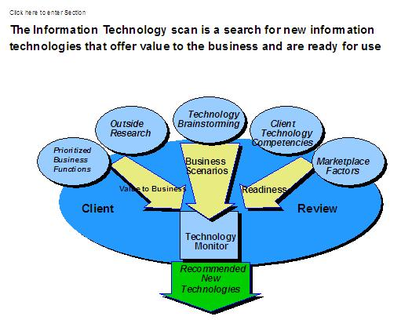

-
Recommend new technologies that will provide significant business value to the client in the near future, and:
-
-
Establish the value of the new technologies to the client.
-
Assess internal (client) and external (marketplace) readiness to implement the new technologies.
-
Recommend new technologies that the client should continue to monitor and those that the client should eliminate
from consideration.
-
-
Identify high-value/low-readiness technologies to monitor and define the factor(s) that will improve the
readiness level.
-
Identify low-value technologies to eliminate from consideration.
-
Capability Workshops, Process Design Work and other business transformation efforts will highlight areas where the
Scans should focus. During these engagements, the consultant and client team must using IBM and external
research to:
-
-
Determine which new technologies are candidates to enhance the client's high-priority business
capabilities, processes, etc.
-
Determine the business scenarios in which the client could apply the candidate technologies for best value
and leverage.
-
Determine the value can the client expect to gain by applying the candidate technologies in the given
business scenarios.
-
Identify the business and technical risks are associated with implementing the candidate technologies in
the given business scenarios.
-
Establish the client's readiness to implement the candidate technologies.
-
Project/identify the rate of adoption of the candidate technologies in the client's industry.
-
Determine the candidate technologies the should the client implement in the near future based on the
identified business value, risks, readiness and rate of adoption.
-
Determine, of the remaining candidate technologies, which ones the client should continue to monitor, and
which the client should eliminate from consideration.
Note: An industry overview of technology usage (Mod. 3 - old methodology - see ITS DB) will identify a minimal set
of areas to investigate. It will allow you to suggest a pull even or leap frog strategy.
The IBM IT Profiler is a database that can be used for IT Peer comparisons.
|